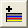
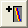
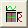
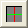
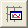
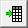

行列データ、またはワークシートデータから作成した仮想行列からプロファイルプロットを作成することができます。一度プロファイルプロットを作成すると、垂直線、水平線、または任意に設定された線に沿ったプロット断面のプロファイルを生成できます。
| Note:プロファイルプロットは「スピードモード・オン」と表示されることがあります。これはデータが選択的にプロットされていることを示しています。スピードモードを修正または無効にすることができます。次をご覧ください。 スピードモード(必要に応じてポイントスキップ) |
プロファイルプロットが作成されると、イメージ/等高線プロファイルダイアログが開きます。
|
イメージプロファイルダイアログを閉じ、 プロファイルグラフとデータのどこを削除するか決定します。 | |
|
垂直のプロファイル線を追加します。垂直プロファイル線は元のプロットの右側のグラフレイヤに追加されます。 | |
|  |
水平のプロファイル線を追加します。水平プロファイル線は元のプロットの上側のグラフレイヤに追加されます。 |
|  |
任意のプロファイル線を追加します。任意のプロファイル線は元のプロットの上側および右側のグラフレイヤに追加されます。 |
|
アクティブなプロファイル上で線を動かしたり複製したりできます。 | |
|
アクティブプロファイルを削除します。プロファイルがレイヤの中に1つのみであれば、レイヤも同時に隠れます（下図をご覧ください）。 | |
|  |
プロファイルグラフと元のグラフを統合して作図します。このモードでは、データなしのレイヤは表示されません。 |
|  |
トグル切り替えでプロファイルプロットをグラフウィンドウと分けて抽出したり、またはプロットを統合して一つにすることができます。 |
|  |
このボタンはプロファイルプロットが別々のグラフにプロットされている場合のみ有効です。このボタンをクリックすると、プロファイルグラフに対応したタブがアクティブになります。 |
|  |
アクティブタブのプロファイルデータセットに移動します。 |
|
このボタンを押すとデフォルト設定ダイアログが開きます。
| |
| VLine、HLine、およびALineタブの設定を表示します（次を参照）。 |
タブの制御は行列データと仮想行列（ワークシート）のデータで少々異なります。相違点は表にまとめられています。
タブのタイトル上でを右クリックして名前を変更できますし、後から使用するために詳細な線の設定を保存し、別のグラフウィンドウに事前に保存された線の設定をロードします。
現在のプロファイル線を編集します。
| プロファイル値 |
プロットの量を選択します。単一のピクセル上にプロットする場合（下記の幅の設定をご覧ください）、これらの値に意味はありません（例：Min=Max=Mean)。値の範囲にプロットする場合、この設定によりプロファイル範囲内にどの量がプロットされるかが決定されます。 例として、幅をスケールによると選択してスケールを20に設定し、垂直線ラインに沿ってプロファイリングする場合を挙げます。これにより2つの垂直線が、Xを中心として20スケール単位の距離に配置されます。プロファイルの量は選択されたXの値から20スケール単位（2つの垂直線の間）にわたって計算されます。
|
|---|---|
| プロファイルデータ出力 |
このオプションは、元のデータが仮想行列の場合に有効です。
|
| 色 |
プロファイル線の色を指定します。 |
| プロファイル線を表示 |
プロファイル線を表示するか指定します。 |
| 幅 |
プロファイル線の幅を指定します。
|
| X |
プロファイルの位置を指定します。垂直のプロファイルで、全範囲が選択された時に利用できます。 |
| Y |
プロファイルの位置を指定します。水平のプロファイルで、全範囲が選択された時に利用できます。 |
| X1, Y1, X2, Y2 |
これらのコントロールは、プロファイルが任意線の場合にのみ利用可能です。これらのポイントは、任意のプロファイルの長さと位置を指定します。X1とY1は1つの線の位置のXとYを指定し、X2とY2は反対側の位置を指定します。 |
| テキスト位置 |
テキストラベルはプロファイルの位置を表示する軸上に表示されます。ドロップダウンリストを使って、このテキストラベルの位置を指定することができます。次のオプションがあります。
|
レイヤから全てのプロファイル線を削除する際には、イメージ/等高線プロファイルダイアログボックスのアクティブなプロファイルを削除する ボタンを押すとレイヤが非表示になります（削除はされません）。
| Note:アクティブなプロファイルを削除する ボタンを押してプロファイルを削除することで、レイヤを非表示にできます。グラフ上で線を選択してキーボードのDeleteキーを押した場合には、対応する線のみ削除され、レイヤは残ります。非表示のレイヤは、元の位置にあります。 |